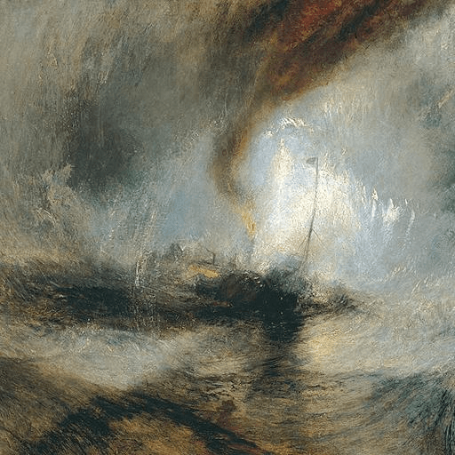

第59卦 風水渙：冰終將是水
上卦：風（☴） ・ 下卦：水（☵）

核心意義
此時的你可能感到人心渙散、力量分散，或凝聚力正在流失。渙散並非無可挽回，關鍵在於找到重新凝聚的核心；以大義或共同的願景召喚人心，讓分散的力量重新匯流，渙散之後的凝聚往往更加純粹。
「我在離散中找回凝聚，讓渙散的心重新匯聚成流。」
祝福
願你心中結凍已久的部分，能被溫柔地融化，重新與人和自己連結。
五大類別指引
感情
關係中可能出現疏離與渙散的感覺，熱情降溫、心漸行遠。別讓距離繼續擴大；主動找回共同的連結，安排屬於兩人的時間、重溫最初的感動，讓渙散的心重新凝聚。
主動找回共同的連結與時間：
- 重溫最初感動，讓心重新靠近。
- 別讓距離繼續擴大。
事業
團隊或組織可能正面臨人心渙散、方向模糊的狀況。此刻需要找回凝聚的核心；重新確認共同的願景與目標，加強溝通與連結，讓分散的力量重新往同一個方向匯聚。
重新確認共同的願景與目標：
- 加強溝通，化解隔閡。
- 讓分散的力量重新匯聚。
健康
健康狀態可能正處於渙散期，作息紊亂、精力分散、難以聚焦。找回規律是凝聚的關鍵；從固定睡眠與飲食開始，讓生活的節奏重新匯聚，身體的能量會逐漸集中。
從固定睡眠與飲食開始找回規律：
- 讓生活節奏重新凝聚。
- 身體能量會逐漸集中。
財運
財務可能正處於分散狀態，資金散落各處、缺乏統籌。把渙散的財務重新凝聚；盤點所有帳戶與資產，建立統一的規劃與目標，讓分散的資源發揮加乘的效果。
盤點所有帳戶與資產：
- 建立統一的規劃與目標。
- 讓分散的資源發揮加乘效果。
人際
原本緊密的群體可能正逐漸疏遠，聚會變少、聯繫轉淡。若你在意這些關係，主動發起連結；安排一次相聚、重啟交流，讓疏遠的人們有機會重新凝聚。
主動發起連結，安排一次相聚：
- 重啟疏遠的交流。
- 讓在意的人有機會重新凝聚。